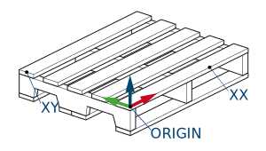

すべてのステーションにはユーザ座標系が関連付けられており、教示された経路はそのユーザ座標系に関連しています。 ユーザ座標系は、[ユーザ座標系] 選択の横にある [歯車] アイコンを押してアクセスできるスマートペンダントのインターフェイスを使用して設定できます。
正しく操作するには、積付ステーションのユーザ座標系を、パレットの上部の角の 1 つでティーチングする必要があります (できれば、ストッパーに押し付けられる角)。 X 軸と Y 軸は、右手の法則に従って Z 軸が上向きになるように、パレットの 2 つの側面に沿ってティーチングする必要があります。

ティーチングでは、ティーチングに使用するツールの位置を表す正しいツール番号が選択されていることを確認してください。 適切な位置に到達するのが難しい場合は、ユーザ座標系の位置に製品(箱)を配置し、製品(箱)の上にティーチングすることができます。 ティーチングが完了したら、ユーザ座標系の Z 値から製品(箱)の高さを引きます。
注: パレットを製品定義する場合、パレットの寸法は、積付ステーションのユーザ座標系を基準にして配置するように定義する必要があります。 長さはユーザ座標系の X 軸に沿っており、幅は Y 軸に沿っています。